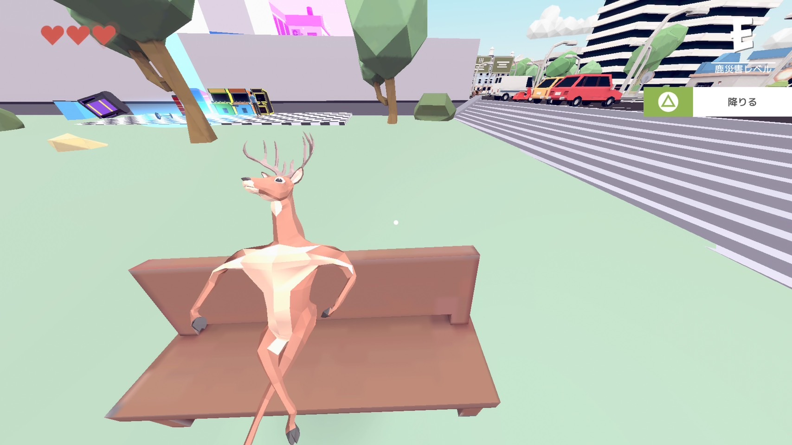
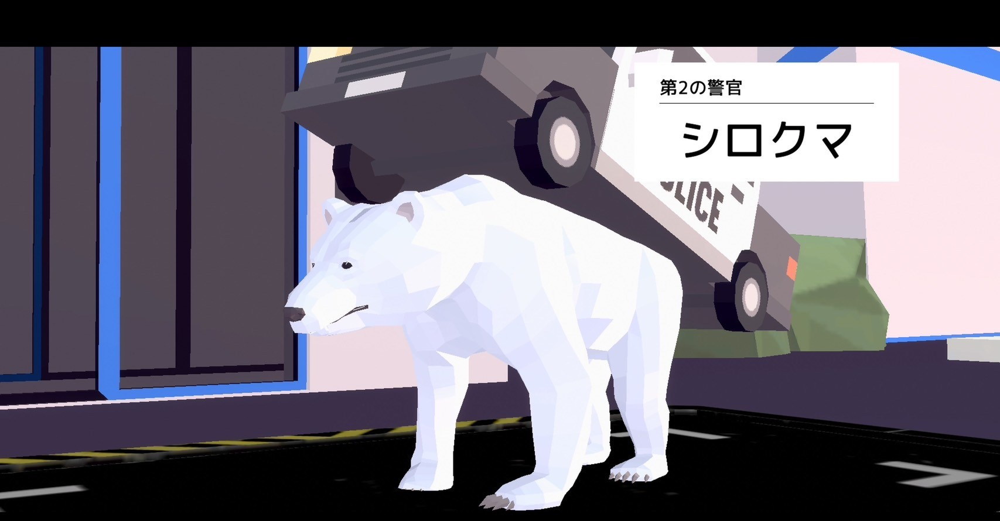
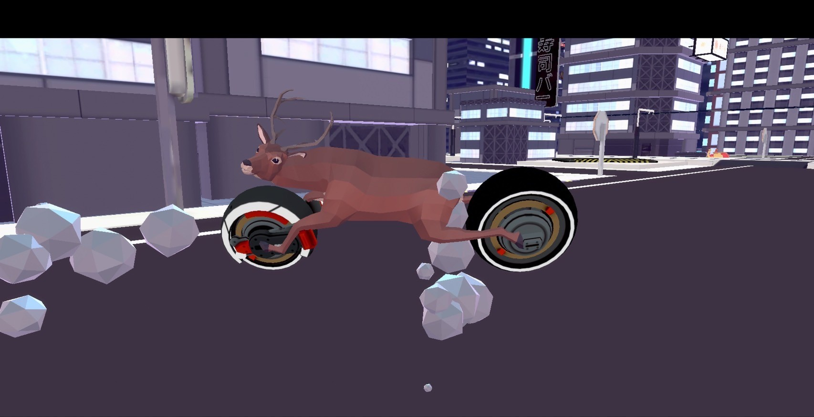

~現代世界~
現代の世界にいる動物たち
あなた
あなた。好きなようにキャラメイクしよう。
シカ
事故にあい、シカに転生したあなた。
2足で走ったり、首を伸ばしたりできる。
武器も使えるし車やバイクだって乗りこなせる。
ウマ
乗れる。
他の乗り物と比べて遅い。
ウシ
リバウシを遊ぶことができる。
(リバウシとは)
オセロ。しかし、生きている牛なので、盤面上でそこら辺に行ったりしてわからなくなる。
ちなみに、街中にも何匹か牛がいる。
マグロ
乗ることができる。
建物や街中のオブジェクトを破壊できる。
アニマルコンバット
飛んだり、撃ったりできる。
近くにあるボタンをすべて押すと出てくる。
ボタンを押すには牛とシカが必要。
ヒツジ
街を少し破壊したりすると出てくる。
数は多いけど弱い。
シロクマ
街をさらに破壊すると出てくる。
背中に乗っているパトカーにはダメージが入らない。
たくさんのヒツジも一緒に出てくる。
イヤー・ウォーカー
街をもっと破壊すると出てくる。
遠距離攻撃をしてくるので注意。
ヒツジとシロクマも一緒に出てくる。
倒すと持ってる武器をゲットすることができる。
イヌ
街をさらにもっと破壊すると出てくる。
倒すためにはちょっとしたギミックを駆使しなければならない。
イッヌの攻撃はほぼ一撃でやられる。
ジャイアントコアラ
街のビルにくっついているコアラ。
攻撃すると目から出るビームで一生追われることになる。
もちろんビームに当たったら一撃でやられる。
ダンクルオステウス
街の空中を飛んでいる巨大魚。
頭以外は攻撃は効かない。
当たると一撃でやられる。
~未来世界~
未来の世界にいる動物たち
電気羊
未来の世界にいる羊。
街を少し破壊すると出てくる。
体力も多く、電気をまとった羊を飛ばしたり、羊を召喚したりする。
白くまMk-2
未来の世界にいるシロクマ。
街をさらに破壊すると出てくる。
車に乗って追いかけてくる。近づいてくるとロボットに変身する。
乗っている間はダメージを受けない。
マウスウォーカー
未来の世界にいるイヤー・ウォーカー。
街をさらにもっと破壊すると出てくる。
カバの中に入っているので、口を開けた瞬間しかダメージが入らない。
倒すと持ってる武器をゲットすることができる。
バイク
未来の世界のバイク。
速い。
ジャンプすることもできる。
サイ
未来の世界にいる巨大なサイ。
倒すとマトリョーシカのように小さいサイが出てくる。
全部倒すと武器がもらえる。
ジャイアントコアラ
未来の世界にいるコアラ。
ホログラムっぽくなっている。
現代世界と同じように攻撃したらビームを打ってくるが、こっちは追いかけながら打ってくる。
もちろんビームは一撃でやられる。
サル
街中にある発電機を全て破壊すると出てくる。
攻撃するとシンバルをたたきながら追いかけてくる。
シンバルをたたいた時に出る斬撃のようなものは、２発くらいでやられる。
ウシ

どうぶつパズルを遊ぶことができる。
(どうぶつパズルとは)
動物の体の一部分がランダムに回転し、それを元通りにする。
完成までの時間がはかられるので、何秒で完成するかチャレンジできる。